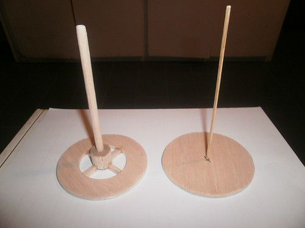
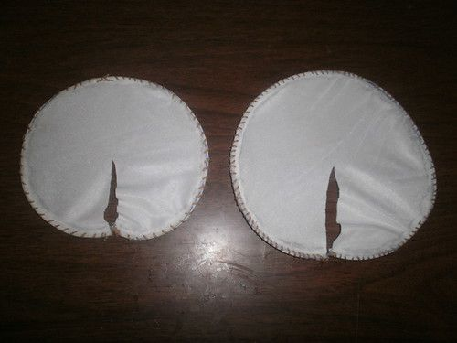
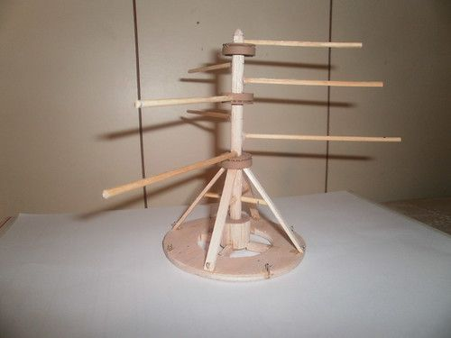
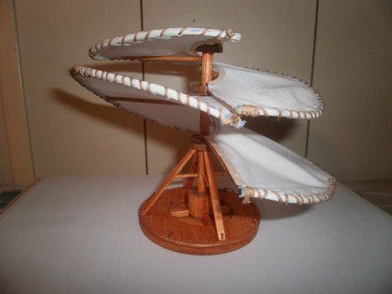

Argitaratua
Leonardoren asmakizun ugarien artean, aireko torlojua nabarmentzen da. Berrikuntza horrek beste tresna batzuk egiteko abiapuntu izan den berrikuntza handia ekarri zuen. Aireko torlojua 1486an asmatu zen eta helikoptero modernoaren aitzindaritzat hartzen da. Instrumentua oinarri zirkularreko plaka bat zen, 10 metro inguruko diametroa zuen torloju batek zeharkatzen zuen ardatz batekin. Kanaberazko egitura batez egina, oihalez estalia, liho almidoiztatuz egina, eta ertz metaliko batez sendotua.
|  |  |  |  |